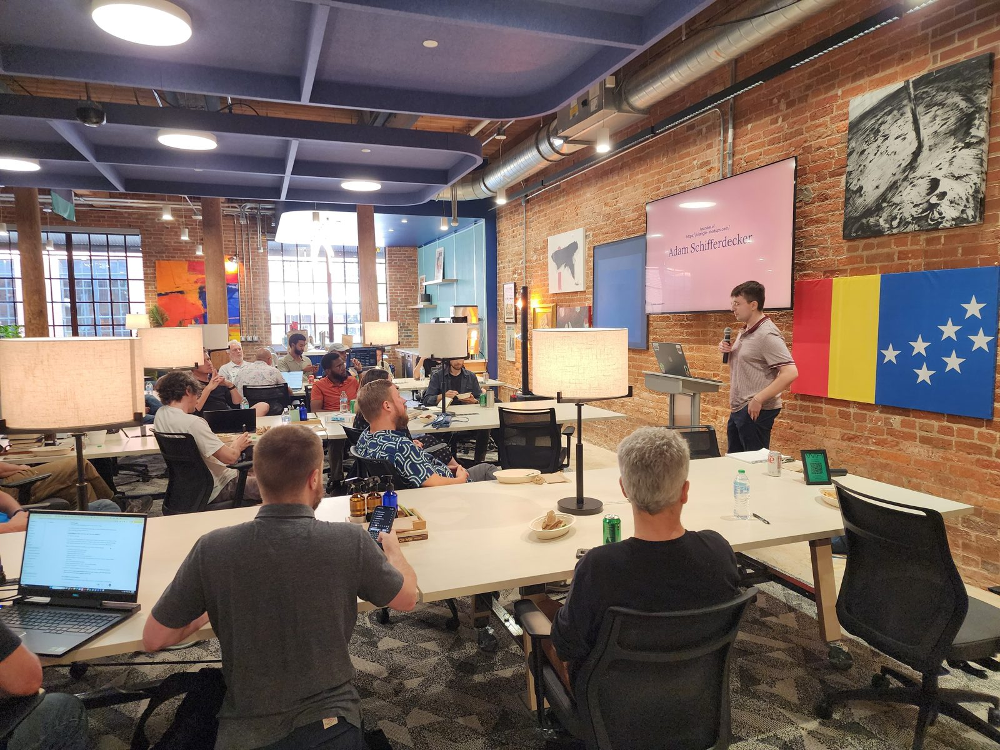
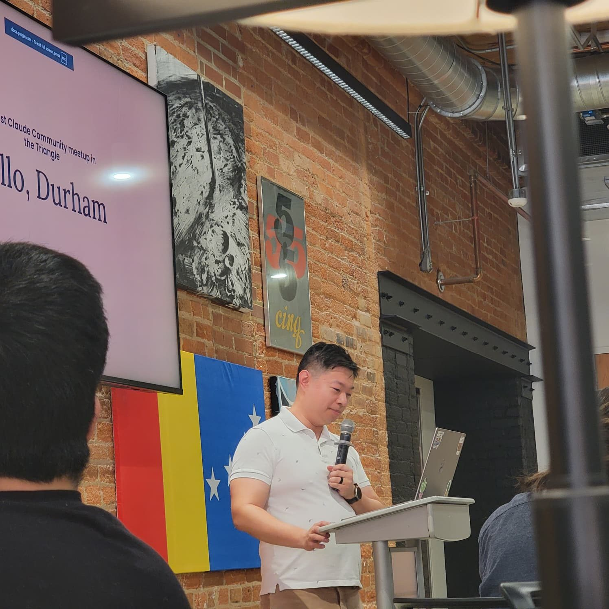
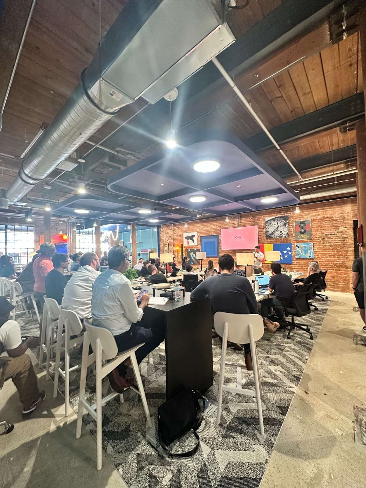
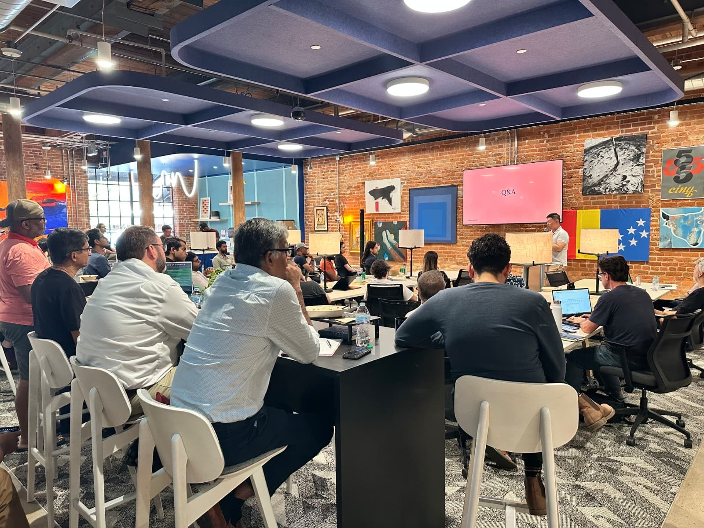

A monthly room at American Underground for people building with Claude: lightning talks, a news roundup, food, and the hard questions nobody has answers to yet. Hosted by Jack Zhang.
Round two added a news roundup and a lightning talk format: a dementia screener built from medical literature, an app un-slopped by adversarial agents, and an AI-powered second brain.
A free, three-gate cognitive screening protocol built from validated instruments (SLUMS, IQCODE, ACE-III, SAGE). Caregivers run it at home in about 20 minutes and get a clinician-ready handoff packet. Not a diagnosis, but the start of one.
ConvoLab, a daily Japanese flashcard app, worked fine. The code was slop. Andrew rebuilt the backend using the working app as the spec, with one agent writing and Claude reviewing.
Being a generalist means too many hats and a need to connect the dots, while every AI tool fights for a piece of your workflow. So Ranjith built one system, powered by AI: capture, structure, cockpit, output.
Left the room with a question: what's the dot in your own work you haven't connected yet?
Group photo and event shots go here once you send them over.
Launch night. Doors at six, food on the table, and a room full of strangers answering the same four questions about how AI actually shows up in their work.




Jack: a homelab that keeps growing, local models on a 3090 next to the frontier ones, and an Instagram to second brain pipeline.
Khan Academy's content platform: embeddings and semantic search, per-locale AI translation, AI sandboxing, automated PR review with human approval.
One company's AI channels are great signal, but one view. How is everyone else navigating this? What's working, and what's quietly in the way?
Cognitive surrender. Being unable to slow down. Mental exhaustion. The AI bubble.
Claude Code made a software-first company possible for one person with a chemistry, health care, and strategy background.
If you're starting this week: put your rules in the repo. Say what would prove the change wrong. Keep the merge, and every irreversible action, human.
Two hands-on formats coming up. Bring a laptop.
Attendees get hands on Fable 5.1, build against three challenge tracks, and share what they made.
RSVP by emailTwo hours to a full day. Learn one skill or tool hands-on, with $50 per head in credits.
RSVP by email